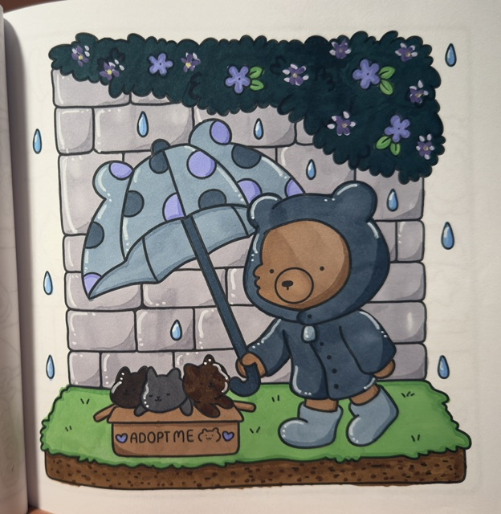
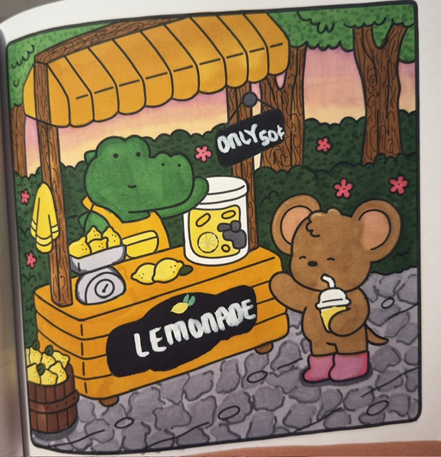
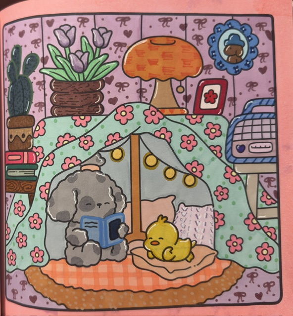
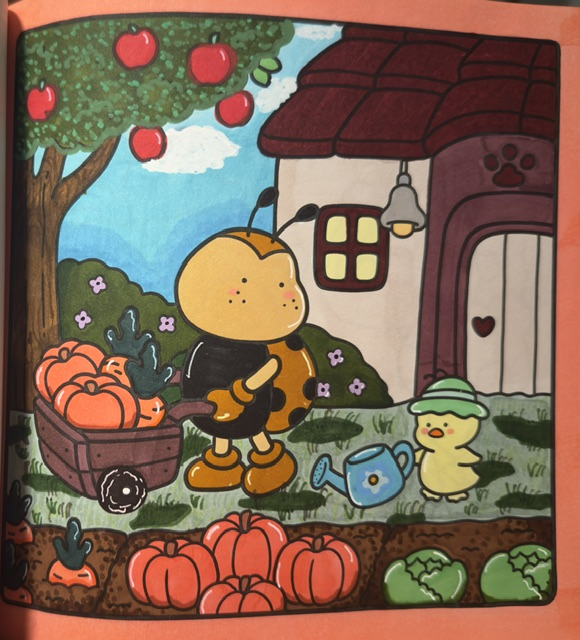
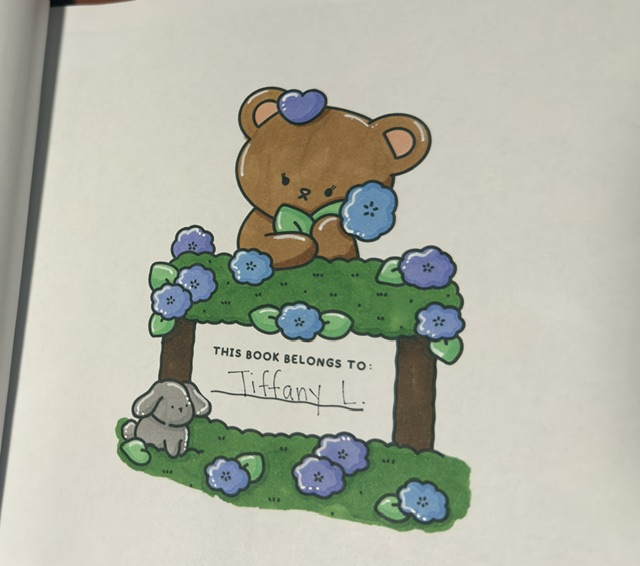
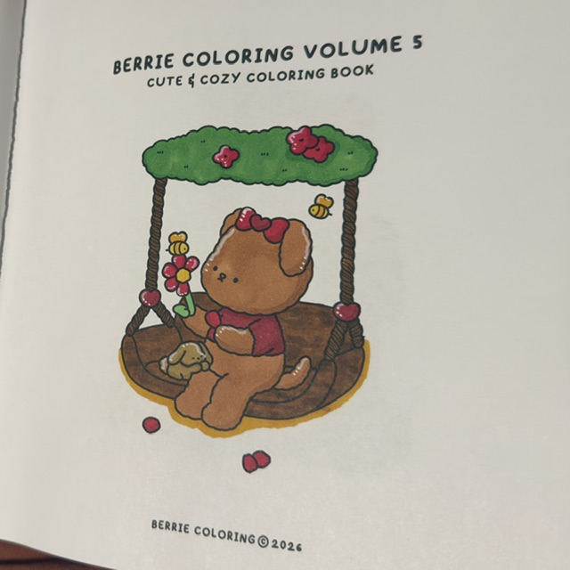
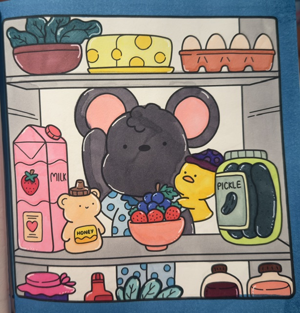

What: Welcome to Solitude in Color
Coloring is one of my favorite creative hobbies. I especially enjoy coloring books from Coco Wyo, the Berrie Coloring series, and Bobbie Goods. Their cute illustrations and everyday scenes make coloring fun and give me opportunities to experiment with different colors.
Solitude in Color is a space where I can share my interest in coloring, the supplies I enjoy using, and the little things that make this hobby special to me.

This is my own photograph of a coloring page. No AI prompt was used to generate the image.
Who: The Person Behind the Colors
I'm someone who enjoys creative hobbies that allow me to spend time doing something for myself. I have other hobbies like reading, journaling, and planning. But coloring is one of those activities where I can work at my own pace and be creative without worrying about getting everything perfect.
I enjoy coloring books with cozy illustrations, cute characters, and scenes that leave room for creativity.

This is a personal photograph of my coloring work. No AI image-generation prompt was used.
When: Finding Time to Color
Coloring is a hobby I can enjoy whenever I have some free time. I don't need a strict schedule, which makes it easy to fit into my day.
Whether I have a few minutes or enough time to finish an entire page, I can pick up where I left off and continue creating.

I photographed this coloring page myself. AI was not used to generate the image.
Where: My Favorite Coloring Spaces
One of the things I like about coloring is that I can do it almost anywhere. All I really need is a comfortable place, my coloring book, and my supplies.
A quiet space with good lighting and enough room to spread out my markers makes the experience even better.

This is my own photograph. No AI image-generation prompt was used.
How: Getting Started With Coloring
Getting started with coloring is pretty simple. You just need a coloring book and something to color with, such as crayons, markers, or colored pencils. I personally love Ohuhu alcohol markers!
I really like the books from Coco Wyo, Berrie Coloring, and Bobbie Goods because of their cozy designs and cute characters. I like choosing color palettes that work well together and experimenting with different coloring techniques I learn on TikTok.

This is my personal photograph. AI was not used to generate the image.
Why: The Joy of Coloring
I enjoy coloring because it gives me a chance to be creative without having to make something from scratch. The design is already there, and I get to decide how to bring it to life.
I also like that there isn't just one correct way to color a page. Everyone can use different colors and techniques to create whatever they desire.

This photograph is my own work. No AI image-generation prompt was used.
AI Prompts
I used ChatGPT to help plan the structure, styling, and functionality of this hobby website. I chose the hobby, website name, color palette, and personal content direction.
The images on this website are photographs of my own coloring pages. AI was not used to generate the artwork or photographs.

No AI image-generation prompt was used. This is an original photograph of my coloring work.
Examples of AI Assistance
- Help create a hobby website about coloring with seven sections that behave like separate pages.
- Use blush pink, pastel sky blue, soft green, and lavender for the website design.
- Make the navigation display only one section at a time using JavaScript.
- Help organize my coloring photographs and captions for the website.